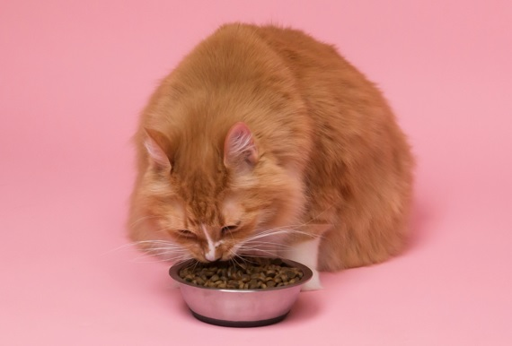

Las 7 causas — pulsa cada una para ver la solución
Es más frecuente de lo que parece. Los fabricantes reformulan sus piensos constantemente — cambian proveedores de ingredientes, ajustan porcentajes, modifican conservantes. El olor y el sabor cambian aunque el packaging sea idéntico.
Los gatos tienen el olfato 14 veces más potente que el nuestro. Un pienso almacenado mal — en un recipiente de plástico, expuesto a la luz o al calor — se oxida rápidamente aunque no lo percibas tú.
Los gatos son extremadamente sensibles a los olores químicos. Un cuenco lavado con detergente con fragancia puede ahuyentarles completamente aunque tú no detectes nada.
En la naturaleza, los felinos nunca comen ni beben cerca de donde hacen sus necesidades. Es un instinto de supervivencia para evitar contaminación. Si el cuenco y el arenero comparten espacio, el gato puede negarse a comer aunque tenga hambre.
Una mudanza, un bebé, otro animal nuevo, obras en casa, un viaje tuyo... Los gatos son animales de rutina y cualquier cambio puede provocar inapetencia temporal. No es obstinación — es ansiedad.
Los gatos aprenden rápido. Si descubren que siendo selectivos consiguen comida más apetecible, lo repetirán. No es manipulación — es aprendizaje por refuerzo positivo. Y tienen razón: la comida húmeda o fresca suele ser objetivamente más nutritiva y sabrosa.
Si las causas anteriores no aplican y el rechazo es repentino e inexplicable, puede haber una causa médica. Dolor dental, gingivitis, náuseas por enfermedad renal o problemas digestivos pueden hacer que comer pienso seco sea doloroso o desagradable.
"Nunca dejes que tu gato pase más de 24 horas sin comer para 'obligarle' a aceptar el pienso. A diferencia de los perros, los gatos pueden desarrollar lipidosis hepática en pocos días — el ayuno forzado es peligroso. Si rechaza el pienso, ofrece algo que sí acepte mientras investigas la causa."
Pienso seco vs húmedo vs fresco — ¿cuál es mejor?
La verdad es que no hay una respuesta única. Depende del gato, su edad, su salud y sus preferencias. Aquí el resumen honesto:
- Económico y fácil
- Bueno para higiene dental
- Muy poco agua — riesgo renal
- Alta temperatura destruye nutrientes
- Muchos gatos lo rechazan
- Más apetecible para gatos
- Aporta hidratación
- Mejor digestibilidad
- Más cara que el pienso
- Calidad muy variable por marca
- Ingredientes reconocibles
- Sin conservantes ni harinas
- Máxima digestibilidad
- Los gatos la aceptan siempre
- Precio más alto

La solución definitiva para el gato exigente
Si tu gato rechaza sistemáticamente el pienso, la causa más probable no es capricho — es que el pienso seco simplemente no le atrae. Los gatos son carnívoros estrictos y su instinto les empuja hacia alimentos frescos, húmedos y con olor potente.
La comida fresca cocinada resuelve el problema de raíz: ingredientes reales, textura apetecible, sin olores artificiales. La mayoría de gatos que rechazan el pienso seco aceptan la comida fresca desde el primer día.
Dogfy Diet también tiene menús para gatos con ingredientes frescos cocinados al vapor. Sin harinas, sin conservantes. 30% de descuento en el primer pedido.
🐾 Probar Dogfy Diet con 30% de descuento →Enlace de afiliado — sin coste extra para ti
Somos afiliados de Dogfy Diet y de Amazon. Comprando a través de nuestros enlaces nos ayudas a mantener este portal gratuito. Nuestra valoración es siempre independiente. ¡Gracias por tu apoyo! 🐾